PISTONS, CYLINDERS & RINGS
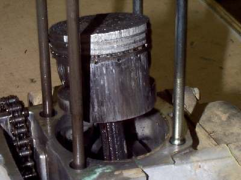
¶ Pistons and Cylinders are pretty straight forward. After you take the head off try to move the piston, sideways, in the bore. There should be almost no movement. look at the cylinder. If there is an obvious ridge at the top of the cylinder and you can feel it with your finger, and there is piston movement sideways, you are going to have to bore it oversize. The factory oversizes are in quarter millimeter increments. Like .25,.50,.75,1.0 and the like. .25 mm is about .010". That's enough to clean up the bore, but it is not enough to increase the size of the engine by much. If you are unsure, measure the diameter of the bore and the diameter of the piston with inside and outside micrometers. Measure the piston about 1/2" up from the bottom of the piston skirt. Now measure the cylinder bore in several places at right angles to each other. Subtract piston diameter from the biggest bore diameter. This gives you the piston clearance. Piston clearance varies due to a number of factors.
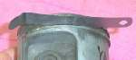 Everybody seems to think a new set of rings should cure everything. I wish it was true... but it's not. I would say 95 % of the time, on a dirt bike, you will need to bore it oversize. Sometimes, on a big street bike, the pistons will be within specification, but on most of the dirt bikes you are going to have to bore it.
It is best to have the cylinder bored on a boring machine. I have honed them as big as .040" over and I held it to spec on taper and out of roundness, but it took forever. Now, if I go bigger then 1/4mm or .010" I like to bore them on a machine. If you do try to hone them be sure to use a good hone like a Sunnen or Ammco. You will have to measure the piston and then bore the cyl to fit. Do not bore the cylinder unless you have the piston to measure. If you do, the clearance may be off.
Remove the circlip and push the wrist pin out with a screw driver. You may lightly tap it but if the pin is in too tight, you will need to pull it with a wristpin puller.
If the piston has seized and smeared aluminum on the cylinder you will need to remove it before you measure it. You can do this with Muriatic acid. Just take medicine dropper and put just a few drops on the aluminum that has been smeared in the cylinder. The acid will eat the aluminum but will not hurt the steel of the cylinder. DO NOT GET THE ACID ON YOU . If you do get it on yourself, water and baking soda will get it off. Also don't get it on any aluminum unless you want that aluminum eaten up. You can get Muriatic Acid at any home improvement store. They sell it buy the gallon, which will do about a billion cylinders. I'm not sure what they use it for... swimming pools or something. See the Acid Page.
OK, you and your buddy are charging up a hill, you can't let him beat you, can you? Of course not. So you really ran that puppy HOT and melted that Piston down good and proper. Drag it home, boiled off all that smeared aluminum, bored the Cylinder, put in new Pistons, Rings and all. Run it long enough that the rings should be seated and WOW. It just will not stop smoking. Now what?
You probably "Burnt" or "Scortched" the Cylinder. You got the metal in that Cylinder too hot and it took the temper out of the steel. The only real cure is a new Cylinder or Cylinder liner. Be sure and check the Cylinder head for flatness too. All that heat might have warped it. Beam me up, Scotty!
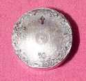 Be sure to check the cylinder for any rust pits. If there are any you will need to bore the cyl to a bigger over size to get rid of them. If you are restoring a machine, you will find these rust pits are wherever the rings stopped in the cylinder. A lot of water is created during combustion. Supposedly, about a gallon of water for every gallon of gas burned. Some of that water tends to collect around the rings.
When you get your cylinder back always ask if they cleaned it. Most places do but, you never know. To check, take a clean rag, put some fresh oil on it and wipe the inside of the cylinder with it. If it brings up any dirt, take your cylinder and wash it in lots of hot soapy water. Immediately dry and oil the cylinder so it will not rust.
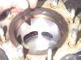 When I install a new Ring use I like to use a ring expander if I can. If you don't have one you can do it with your fingers, just be careful not to spread the Ring open too far or bend it sideways too much. Rings are very hard and brittle and break easily. Always install Rings with the markings on the rings up. A word here on rings. 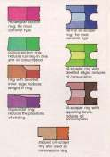 Think about it. Combustion produces several thousands of pounds of pressure. You can compress the ring with one hand, right? It is that combustion pressure itself that channels down between the piston and ring, pushing the ring against the cyl wall. So don't put a .5 over ring in a .25 over cylinder and think you are helping, your not. In fact, that Ring will not contact the cylinder wall right. So you could be losing compression. 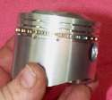 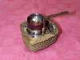 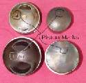 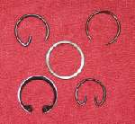 Circlips come in a number of different flavors, but about 95% of the motorcycle pistons out there are of the wire type. Older Harley Davidsons used their own funny circlip that required a special tool to install. Newer HD models and aftermarket HD pistons are sort of coming around to the wire type. If you are not sure of the type, check with the manufacturer. Circlips are NOT interchangeable between types. DO NOT just pick anything and jam it in there. Use the type the manufacturer of the piston recommends. If the circlip fails and allows the wrist pin to hit the cylinder walls, bad things will happen. Back in the 60s and 70s some of the high performance builders used Teflon or aluminum "Buttons" in place of circlips, but that has fallen out of favor and no one seems to use them anymore.
Two, three and four cylinder engines usually have the crank pins staggered so you can put the pistons in one or two at a time... makes for lots of fun. Go slow and they will go in.
Piston oversizes are usually marked on the piston. Trouble is, sometimes the markings are printed on with ink and not stamped in or they are worn off. If the oversize is marked on the piston, it can be in thousands of an inch, like this .020" oversize piston or in quarters of a millimeter, like this 0.50 mm oversize piston. Then, just to make it interesting, there can also be a code stamped in the piston top. This code number tells what oversize the piston is and what type of rings are used. I always measure the old piston so I can order the right oversize.
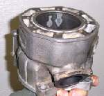 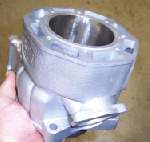 If the damage is not too bad, you may be able to have the damaged cylinder replated. I think this is just a high tech way of doing things on the cheap. One thing to remember. On Chrome Plated cylinders you MUST use cast iron rings and NOT chrome rings. If you use chrome rings on a Chrome Plated cylinder, things do not wear so well. It will start pealing the chrome off. You can use chrome rings on Nikasil, Electrofusion, Boron Composite and some others. Check with the ring's manufacturer to be sure. I gotta admit, plating does work good if you never seize an engine up, and we would never do that, would we?
Something to remember, if you are working on an old bike and are having trouble finding a piston. As long as the wrist pin diameter is the same and you can bore the cyl to fit it. Almost any piston will work. You might have to cut the piston skirt down or drill big ports in it. You might have to grind the piston head to fit the combustion chamber or grind inside the skirt to make it the right weight, but with some imagination you can make it fit and it will work.
For example, in High School I used to take a Honda 175cc twin cylinder piston and make it work in my CT-90 engine. I would bore the cylinder out because the 175 piston (52mm) was bigger in diameter then the 90cc piston (50mm). It also had a much higher piston crown. I would put the valves in the cylinder head and then lay a piece of carbon paper on it with the carbon toward the piston. I then pressed the top of the piston into the combustion chamber and wiggled it about. The spots on the piston from the carbon paper are the high spots.
I then took a hand file and filed off the carbon marks, moved the carbon paper around, rub the piston again, and file some more. I would mark and file until no marks showed up. I would then file just a bit more. I then assembled the engine with a small piece of clay on the piston. Turn the engine over and then measure the thickness of the clay. That told me how much clearance there was between the piston and the cylinder head. You need about .040" of an inch clearance. My 90 was stroked so I had to cut down the piston skirt too. The wrist pin was the same diameter as the 90 so I was in. Why did I do all this when CT-90 pistons are easy to get? Well, it gave me a measured 13.8 to 1 compression ratio. As long as I could get high octaine gas I could fly! The point is, if you can't find the right piston, lots of times, you can make another one fit.
You will find that some pistons look kind of weird. This is because engine designers are always trying to get a bit more horsepower out of the engine. Check these pistons out.
A small (50mm bore) cast piston, 4/stroke may have half a thou (.0005" or .0127mm ) piston clearance, while a big, forged piston, 2/stroke (73mm, 2.874") can need .003" (.075mm) or more. You will need a shop manual to find the clearance for your bike. Now this is the minimum. What is the maximum? I once had the exhaust off of a 400cc 2/stroke single, and I was able to slip a .020" feeler gauge between the piston and cylinder. Why did I have the pipe off? The guy wanted me to check the pipe out. I found several, large, rubber, air cleaner box mounts in the pipe! The guy said he had never had the pipe off. The bike ran for several more months before the piston skirt broke. Bottom line, get a shop manual and get the right clearance. If it is an after market piston, use the piston manufacturers clearance recommendation.


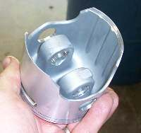 KTM 500cc Piston. Notice the posts for the wrist pin. |
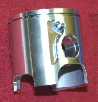 Wiseco Yamaha YZ 125cc piston. Notice the deep hole in the side. This gives a bit more fuel mixture. |
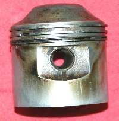 650 Triumph twin, 9:1 Piston. Old Technology. Small bore (71mm) and long stroke(82mm) make a tall piston crown necessary to produce high compression. |
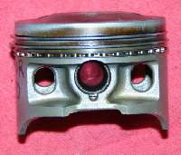 Honda XR250R single, 9.6:1 Piston. New Technology. 73mm bore and 59.5mm stroke Notice the low piston crown, short skirt and lighting holes. |
Wow, I guess there is a bit more to pistons then I first thought.

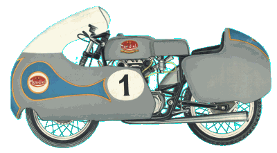 |
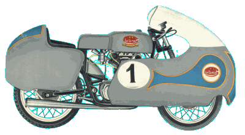 |
Copyright © 1999-2015 dansmc.com. All rights reserved.